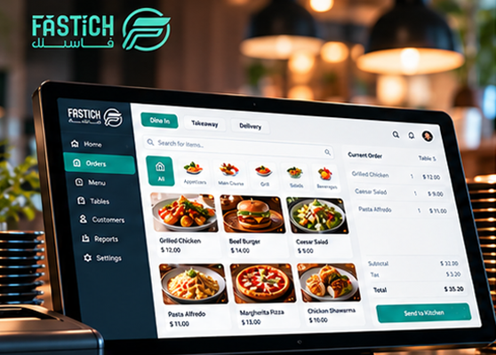
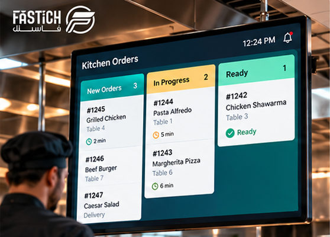
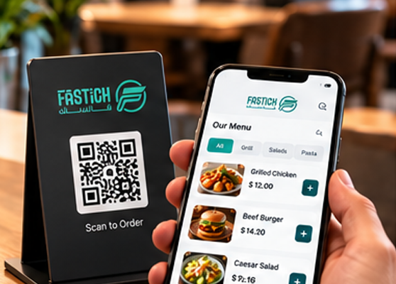
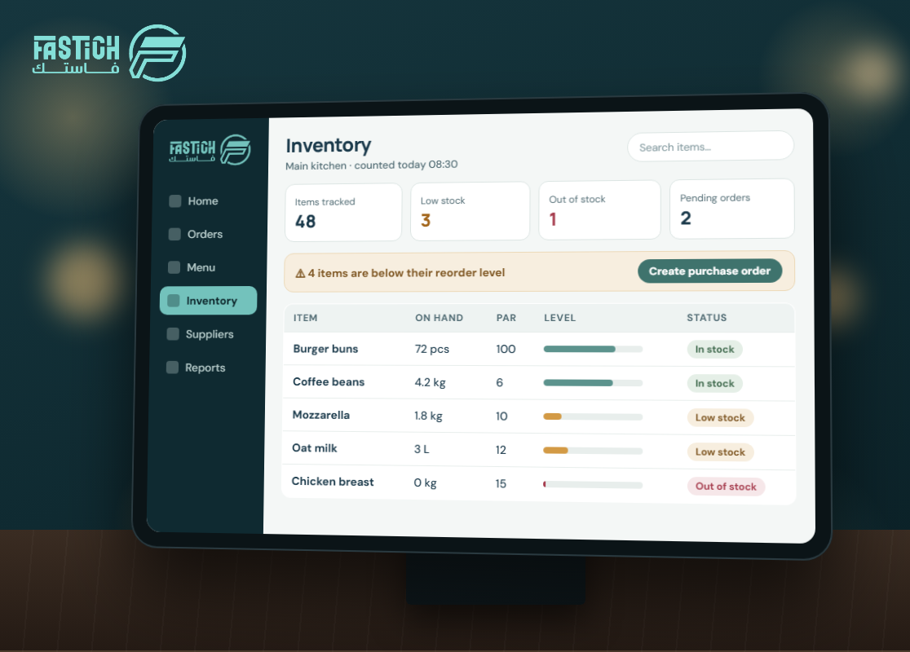
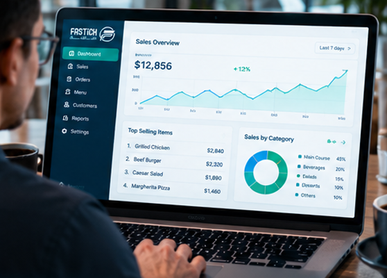
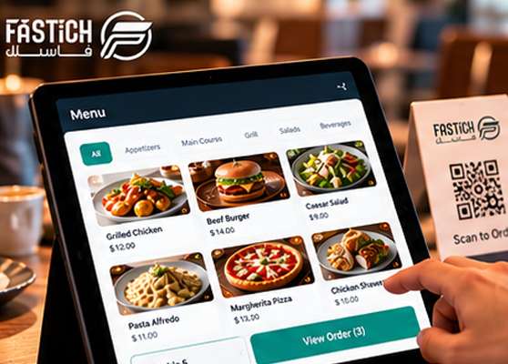
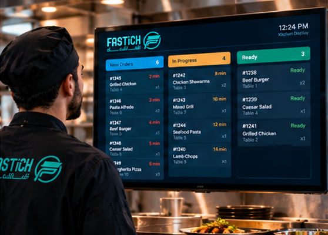
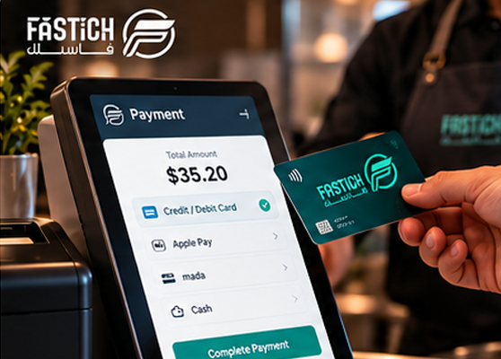
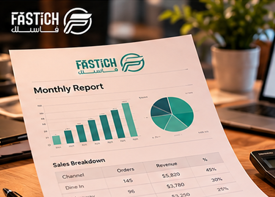
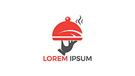

Cafes
Keep busy counters moving with quick ordering, modifiers and clear daily reports.
For cafesSee how the products fit together, from first order to end-of-day report.
Explore all productsStart from your format and see which workflows matter most.
All solutionsTell us about your format and the workflows you want to improve.
Ask the teamBring orders, teams, kitchen workflows and business insight together with Fastich — designed to make every service feel simpler.
From the first order to the end-of-day report, connect the moving parts of your operation.
Choose the capabilities you need today, with room to evolve as your business grows.
Take orders, manage tables, coordinate teams and understand your daily performance.

From ticket routing to preparation status, give each station the information it needs.

Let guests browse your menu, order ahead and choose pickup or delivery.

Track ingredients, purchasing and stock movement so you can act before something runs out.

Bring sales trends, menu performance and branch activity into view, so the next decision feels a little clearer.

Each step hands the right information to the next team — no re-typing, no chasing.




At the counter, at the table with the waiter app, or online — every order lands in the same place, with modifiers and notes intact.
Point of Sale · Waiter App · Online OrderingItems are routed to the right station and preparation status is visible to the floor, so nobody has to walk back and ask.
Kitchen DisplayOrder totals and checkout live in the same flow, including split bills for tables that want them.
PaymentsSales and ingredient usage feed your reports, so tomorrow’s purchasing and menu decisions start from today’s activity.
Inventory · Reports & BIKeep busy counters moving with quick ordering, modifiers and clear daily reports.
For cafesCoordinate high-volume orders from cashier to kitchen and pickup.
For quick serviceBring table service, coursing, payments and kitchen communication together.
For full serviceOrganize multiple menus and digital order channels in a single workflow.
For cloud kitchensCompare branches, standardize operations and maintain visibility as you grow.
For groupsFastich is designed around common integration categories — from accounting and delivery channels to analytics and custom APIs. Availability depends on the provider and your region.
Example perspectives from the roles Fastich is designed for.
Share your restaurant type, team and the workflows you want to improve.
Walk through the product areas and a configuration suited to your needs.
Compare plans and understand how to roll out the right workflows for your team.
See plans
Fastich is a connected restaurant operations platform covering point of sale, kitchen workflows, online ordering, inventory and reporting. This website is a concept, so figures and examples on it are illustrative.
Multi-branch workflows are part of the platform concept. Contact the Fastich team to confirm current capabilities for your number of locations.
The pricing page shows illustrative plans to help you compare options. Final pricing depends on your setup and should be confirmed with the Fastich team.
Yes. Use the request-a-demo form to share your restaurant type and the workflows you want to see.
Tell us how your restaurant runs and we’ll show you the parts of Fastich that matter to you.